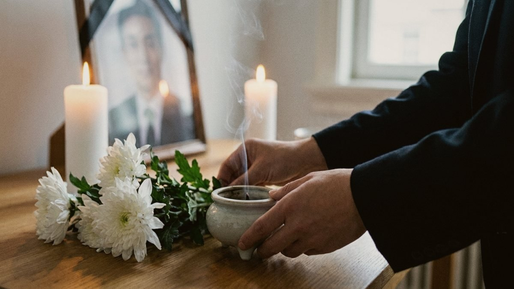
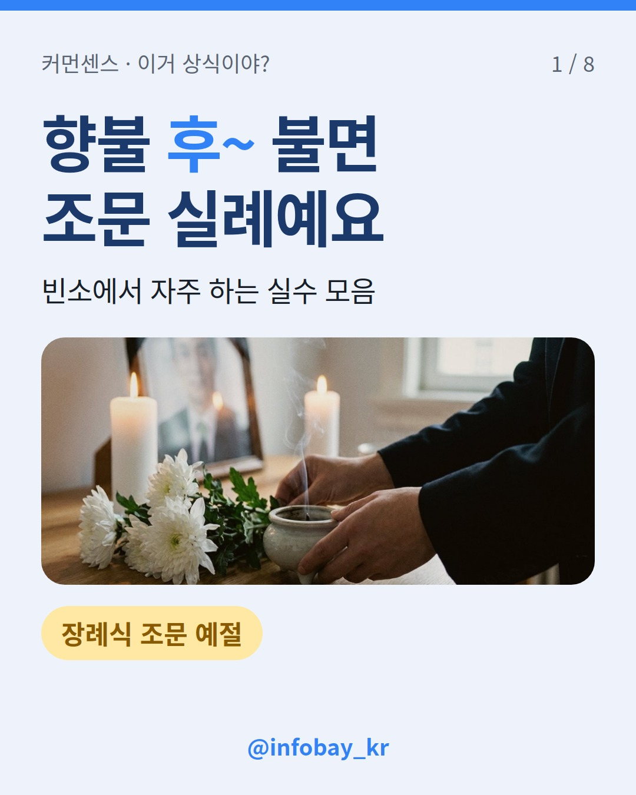
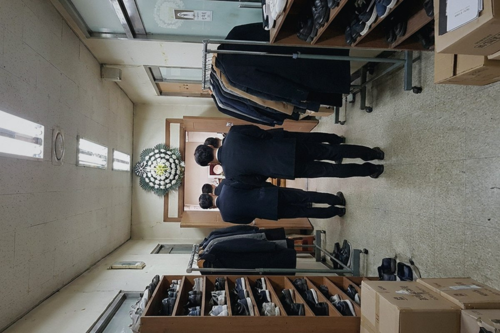
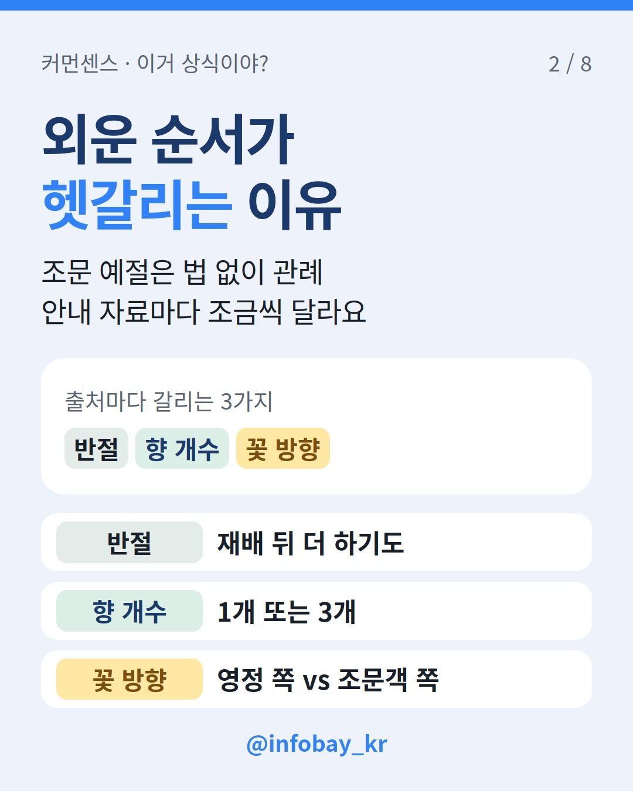
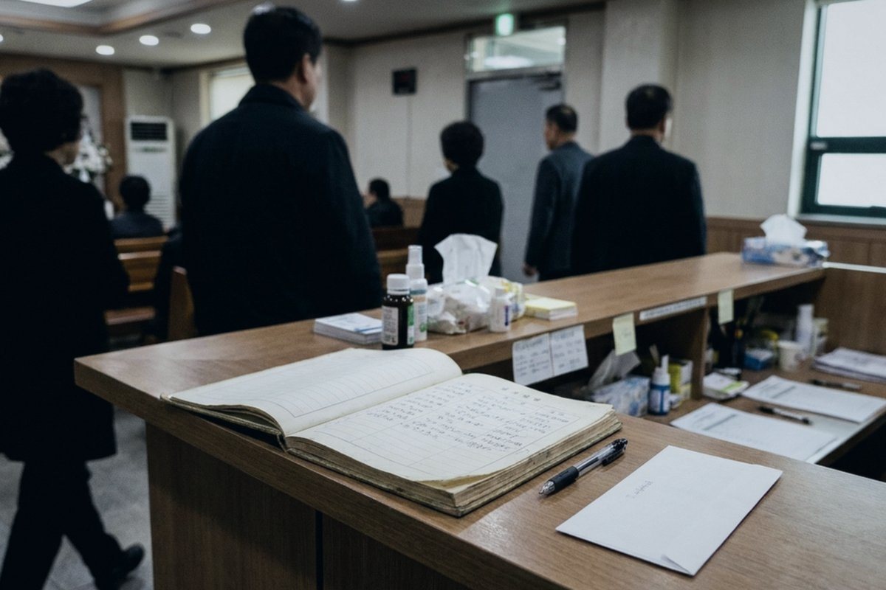

부고를 받고 처음 빈소에 가는 날엔 순서보다 '이거 해도 되나?'가 더 신경 쓰이죠. 답부터 말하면, 영정에 두 번 절하고 상주와 한 번 맞절한 뒤 짧게 인사하고 나오면 돼요.
한 줄 결론 조문 예절은 법으로 정한 규칙 없이 관례를 따라요. 헷갈리면 앞사람과 상주 측 안내를 따라 하면 실수할 일이 없어요.

조문 순서는 5단계예요. 장례식장과 상조회사 안내 자료들이 공통으로 쓰는 흐름이에요.
부의금은 조객록에 이름 쓸 때 접수대에 내거나 조문을 마친 뒤 내요. 상주에게 직접 건네지 않고 접수대(호상소)에 내는 게 일반적이에요. 얼마를 넣을지는 조의금 5만원 vs 10만원? 설문 1위와 성균관 권고가 다른 이유에 정리해 뒀어요. 일행이 여럿이면 대표 한 명만 분향하고, 나머지는 함께 절하거나 묵념하면 돼요.
기본은 영정에 큰절 두 번, 상주와 맞절 한 번이에요. 그런데 안내 자료끼리 다르게 말하는 부분이 세 군데 있어요. 어느 쪽을 따라도 실례로 보긴 어려워요. 빈소에서 앞사람이 하는 방식에 맞추면 돼요.
| 갈리는 부분 | A 안내 | B 안내 | 무난한 선택 |
|---|---|---|---|
| 재배 뒤 반절 | 두 번 절한 뒤 반절(허리 굽힌 인사) 한 번 더 | 재배하고 바로 상주와 맞절 | 앞사람 동작 따라 하기 |
| 향 개수 | 1개 | 1개 또는 3개(홀수) | 1개면 충분, 여러 개면 하나씩 꽂기 |
| 헌화 꽃 방향 | 꽃봉오리가 영정 쪽(성균관 쪽 주장으로 소개됨) | 꽃봉오리가 조문객 쪽(예지원 쪽 주장으로 소개됨) | 이미 놓인 꽃과 같은 방향 |

빈소에 향이 준비돼 있으면 분향, 국화가 놓여 있으면 헌화를 하면 돼요. 일반 장례는 분향을, 기독교·천주교식 장례는 헌화를 하는 경우가 대부분이에요.
| 빈소 | 영정 앞에서 | 참고 |
|---|---|---|
| 일반·유교식 | 분향 후 재배 | 가장 흔한 방식 |
| 불교식 | 분향 후 재배 또는 합장 | 염불 중이면 조용히 기다리기 |
| 천주교식 | 분향 또는 헌화 후 묵념·기도 | 절을 하기도 해요 |
| 개신교식 | 헌화 후 묵념·기도 | 대개 절하지 않고 상주에게도 목례 |
조문 인사말은 짧게 하거나 아예 안 해도 돼요. 언어 예절 자료는 문상에서 가장 예의에 맞는 게 아무 말도 하지 않는 거라고 설명해요. 굳이 한다면 '삼가 조의를 표합니다', '얼마나 슬프십니까', '뭐라 드릴 말씀이 없습니다' 정도예요.
피할 말도 정해져 있어요.

남성은 검은 양복이 원칙이지만, 불가피하면 감색이나 회색도 실례가 아니에요. 셔츠는 흰색, 넥타이·양말·구두는 검은색으로 맞춰요. 출근복이 짙은 감색이나 회색 정장이라면 넥타이와 양말만 챙겨도 기준에 맞아요.
여성은 검은색 상하복이 가장 무난해요. 스커트를 입었다면 무늬 없는 검은 스타킹을 신어요. 맨발이 보이지 않게 하고, 짙은 화장과 액세서리는 피하는 게 좋아요.
| ✕ 흔한 실수 | ○ 이렇게 |
|---|---|
| 1. 향불을 입으로 후~ 불어 끄기 | 손으로 흔들어 끄기 |
| 2. 상주에게 사망 경위 묻기 | 상주가 먼저 꺼내지 않으면 묻지 않기 |
| 3. '호상이네요'라고 말하기 | 짧은 위로나 조용한 목례 |
| 4. 상주에게 악수 청하기 | 목례가 일반적 |
| 5. 식사 자리에서 건배·잔 부딪히기 | 조용히 먹고 과음하지 않기 |
| 6. 개신교 빈소에서 큰절 | 헌화 후 묵념, 상주에게 목례 |
빈소 들어가기 전 체크리스트

이 글의 한계: 여기 적은 건 가장 널리 쓰이는 방식이에요. 지역, 종교, 집안마다 다를 수 있고, 빈소에서 상주 측이나 장례지도사가 안내하면 그게 우선이에요.

Q. 부고 받자마자 가도 되나요?
원칙은 상주가 상복으로 갈아입은(성복) 뒤에 가는 거예요. 다만 요즘은 시간 날 때 가도 괜찮다는 안내가 많아요.
Q. 절 순서가 기억 안 나면요?
선 채로 묵념해도 돼요. 종교 때문에 절을 하지 않는 사람도 정중히 고개를 숙이면 예를 갖춘 거예요.
Q. 밥은 꼭 먹고 와야 하나요?
식사는 필수가 아니라 선택이에요. 조문객이 많을 땐 건너뛰어도 괜찮아요.
부고 문자를 받으면 빈소 종교부터 확인해 보세요. 분향인지 헌화인지만 알아도 절반은 준비된 거예요. 경조사비 기준이 궁금하면 축의금 얼마? 평균 11만7천원인데 제일 많이 낸 금액은 5만원도 이어서 읽어 보세요.
이 상황, 당신은? 상주에게 위로의 말 없이 맞절만 하고 나와도 된다. 인정? 아닌데? 커먼센스에서 투표해 보세요.
*2026년 11월 기준, 장례식장·상조회사 조문 안내와 언어 예절 자료를 확인해 작성했어요.*